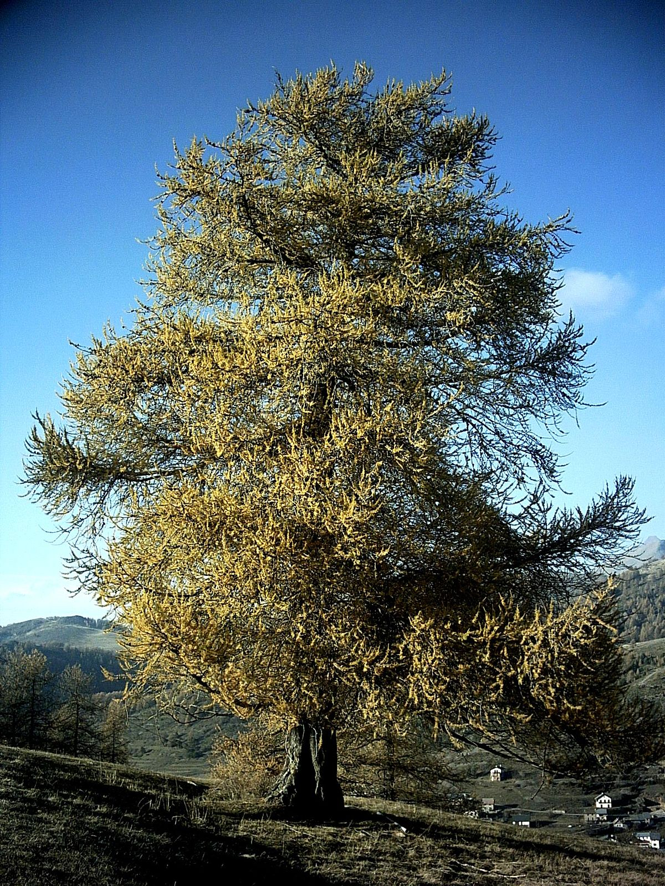
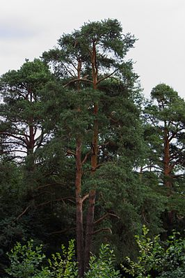
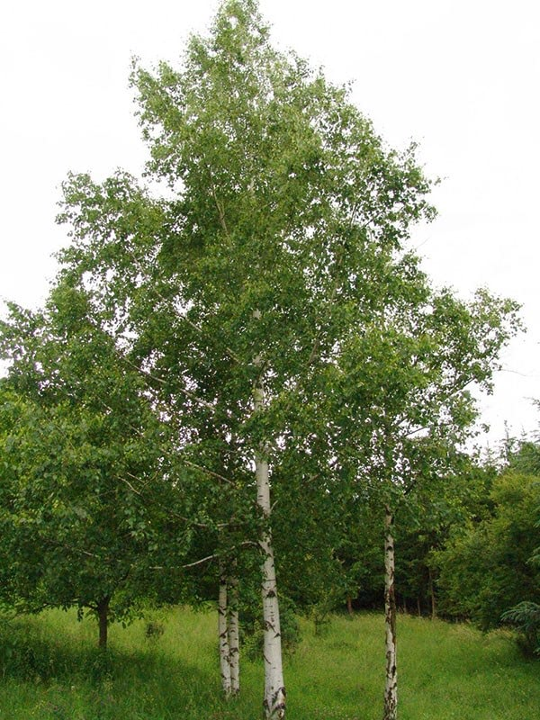

Ли́ственница (лат. Lárix) — род древесных растений семейства Сосновые, одна из наиболее распространённых пород хвойных деревьев. Хвоя ежегодно опадает на зиму. Лиственница европейская.
Сосна – стройное прямостоячее дерево с могучим стволом, на две третьих лишенным ветвей, и пышной кроной. При благоприятных условиях может достигать 40-50 метров в высоту, ствол дерева – от 0,5 до 1,2 м в диаметре. Самые высокие экземпляры встречаются на Прибалтийском побережье.
Берёза (лат. Bétula) — род листопадных деревьев и кустарников семейства Берёзовые (Betulaceae). Берёза широко распространена в Северном полушарии; на территории России принадлежит к числу наиболее распространённых древесных пород.
Листвиница | Сосна | Береза |
|  |  |  |